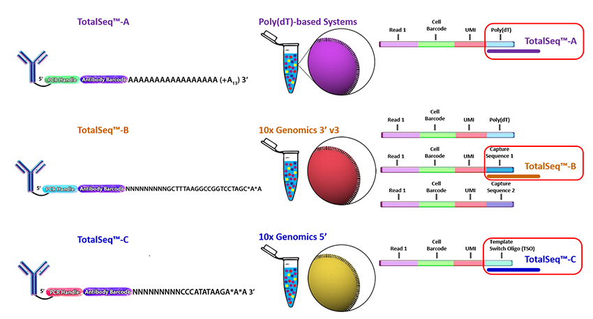
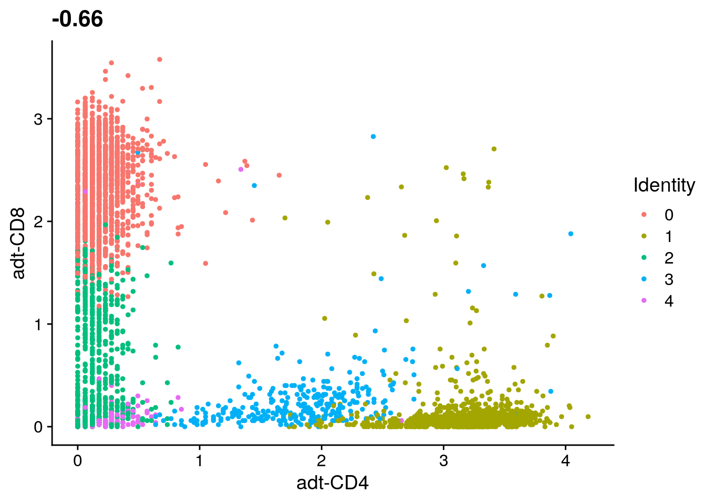
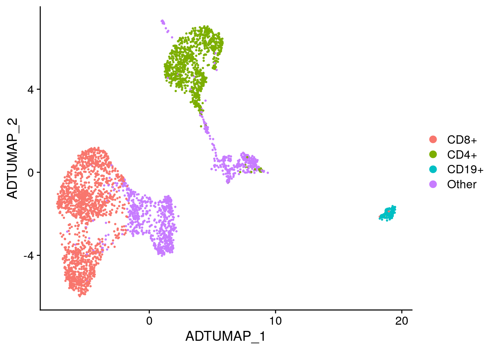

Working with Multi-modal Data
Ryan Sheridan
August 15th, 2019
Experimental design
CITE-seq reagents
Biolegend is the main company selling CITE-seq and cell hashing antibodies (TotalSeq). Biolegend reagents are divided into three product lines:
- TotalSeq-A: 3’ gene expression, v2 and v3 chemistry
- TotalSeq-B: 3’ gene expression, v3 chemistry
- TotalSeq-C: 5’ gene expression and V(D)J

Cell hashing reagents
Cell hashing allows for sample multiplexing and “super-loaded” runs with >10,000 captured cells. Super-loading results in higher doublet rates (~10% for 10,000 captured cells), but these doublets can be removed by identifying cell barcodes that are associated with multiple hashtag oligos.

Biolegend cell hashing reagents for human cells include a mix of two antibodies that recognize CD298 and β2 microglobulin. Mouse hashing antibodies recognize CD45 and H-2 MHC class I.
TotalSeq-A reagents use a different PCR handle for CITE-seq and cell hashing antibodies. This means two separate libraries have to be prepared. To ensure that the correct libraries are created, it is import to tell the sequencing core which types of antibodies were included in the experiment.
TotalSeq-C reagents use the same PCR handle for CITE-seq and cell hashing antibodies, which means that only a single library will be prepared. However, to ensure that the correct libraries are created the core should be notified of all reagents used for the experiment.
MULTI-seq uses lipid- and cholesterol-modified oligonucleotides.
Creating a Seurat object with multiple assays
Loading counts matrices
The Read10X function can be used with the output directory generated by Cell Ranger. However, our count data is stored as comma-separated files, which we can load as data.frames and then convert to sparse matrices.
# Data URL
data_url <- "https://scrnaseq-workshop.s3-us-west-2.amazonaws.com"
# Function to import counts
import_counts <- function(file_name, file_url = data_url) {
mtx <- file.path(file_url, file_name) %>%
read_csv() %>%
column_to_rownames("X1") %>%
as.sparse()
mtx
}
# Import gene expression matrix
rna_mtx <- import_counts("CITEseq_cDNA.csv.gz")
# Import CITE-seq matrix
adt_mtx <- import_counts("CITEseq_ADT.csv.gz")
rownames(adt_mtx) <- str_c("adt-", rownames(adt_mtx))
adt_mtx[, 1:10]#> 8 x 10 sparse Matrix of class "dgCMatrix"
#>
#> adt-CD14 11 2 14 1 . 1 1 . . 1
#> adt-CD19 9 . 165 295 . 3 6 4 2 1
#> adt-CD3 . 19 79 2 3 6 9 3 3 4
#> adt-CD4 69 360 293 7 159 321 1 7 7 4
#> adt-CD45 . . 3 4 . 1 . . 1 .
#> adt-CD45RA 25 3 246 16 8 5 18 6 4 9
#> adt-CD45RO 6 4 108 6 . 2 1 2 1 3
#> adt-CD8 7 . 36 6 . . 473 21 7 197# Import HTO matrix
hto_mtx <- import_counts("CITEseq_HTO.csv.gz")
hto_mtx[, 1:10]#> 4 x 10 sparse Matrix of class "dgCMatrix"
#>
#> HTO28 351 . . . 2 161 . . . .
#> HTO29 6 2 3 1 1 2 2 107 2 .
#> HTO30 . 131 177 60 . . . . 239 155
#> HTO44 1 . . . 122 . 172 . 1 .Creating a Seurat object
When adding multiple assays to a Seurat object, we first must identify cell barcodes that are present in all of the datasets. If one of the assays has a different number of cell barcodes Seurat will throw an error.
# Get list of common cell barcodes
rna_bcs <- colnames(rna_mtx)
adt_bcs <- colnames(adt_mtx)
hto_bcs <- colnames(hto_mtx)
merged_bcs <- rna_bcs %>%
intersect(adt_bcs) %>%
intersect(hto_bcs)
# Create Seurat object
sobj <- rna_mtx[, merged_bcs] %>%
CreateSeuratObject(min.cells = 5)
# Add CITE-seq and cell hashing data to Seurat object
sobj[["ADT"]] <- adt_mtx[, merged_bcs] %>%
CreateAssayObject()
sobj[["HTO"]] <- hto_mtx[, merged_bcs] %>%
CreateAssayObject()
sobj#> An object of class Seurat
#> 15032 features across 4292 samples within 3 assays
#> Active assay: RNA (15020 features)
#> 2 other assays present: ADT, HTODemultiplexing hashed samples
Normalizing HTO counts
To account for differences in antibody binding efficiencies, CITE-seq and cell hashing data can be normalized by performing a centered log-ratio transformation for each individual antibody.
# Normalize HTO counts
sobj <- sobj %>%
NormalizeData(
assay = "HTO",
normalization.method = "CLR"
)Sample demultiplexing and identification of doublets
To demultiplex hashed samples, the HTODemux function uses the normalized HTO counts for k-medoids clustering. This results in a cluster for each HTO A background signal is then calculated for each HTO using cells that are not present in the HTO-specific cluster. Outlier cells from this background signal are then classified as being “positive” for the HTO.
Cells that are positive for multiple HTOs are classified as doublets and cells that are not positive for any HTO are classified as “negative” cells.
The HTODemux function automatically adds several columns to the meta.data table.
- HTO_classification: shows positive HTOs that were identified for the cell
- HTO_classification.global: singlet classification (singlet, doublet, negative)
- hash.ID: final HTO assignment including doublet and negative classifications
# Demultiplex samples
# By default HTODemux will look for the "HTO" assay
sobj <- sobj %>%
HTODemux(positive.quantile = 0.97)
sobj@meta.data %>%
head()#> orig.ident nCount_RNA nFeature_RNA nCount_ADT
#> AAACCTGAGACAAAGG SeuratProject 3054 1217 388
#> AAACCTGAGCTACCGC SeuratProject 2411 989 337
#> AAACCTGCACCAGGTC SeuratProject 4182 1394 509
#> AAACCTGCACTCTGTC SeuratProject 3681 1456 43
#> AAACCTGGTATGAAAC SeuratProject 2503 1255 530
#> AAACCTGGTGAGTATA SeuratProject 1241 692 352
#> nFeature_ADT nCount_HTO nFeature_HTO HTO_maxID
#> AAACCTGAGACAAAGG 5 358 3 HTO28
#> AAACCTGAGCTACCGC 8 180 2 HTO30
#> AAACCTGCACCAGGTC 7 163 2 HTO28
#> AAACCTGCACTCTGTC 6 174 2 HTO44
#> AAACCTGGTATGAAAC 6 638 2 HTO28
#> AAACCTGGTGAGTATA 6 71 2 HTO44
#> HTO_secondID HTO_margin HTO_classification
#> AAACCTGAGACAAAGG HTO29 3.211027 HTO28
#> AAACCTGAGCTACCGC HTO29 3.448779 HTO30
#> AAACCTGCACCAGGTC HTO29 2.802755 HTO28
#> AAACCTGCACTCTGTC HTO29 3.148890 HTO44
#> AAACCTGGTATGAAAC HTO29 3.649778 HTO28
#> AAACCTGGTGAGTATA HTO29 2.285112 HTO44
#> HTO_classification.global hash.ID
#> AAACCTGAGACAAAGG Singlet HTO28
#> AAACCTGAGCTACCGC Singlet HTO30
#> AAACCTGCACCAGGTC Singlet HTO28
#> AAACCTGCACTCTGTC Singlet HTO44
#> AAACCTGGTATGAAAC Singlet HTO28
#> AAACCTGGTGAGTATA Singlet HTO44# Summarize cell classifications
table(sobj$HTO_classification.global)#>
#> Doublet Negative Singlet
#> 386 1 3905# Create ridge plots showing HTO signal
sobj %>%
RidgePlot(
assay = "HTO",
features = rownames(hto_mtx),
ncol = 2
)
EXERCISE: Compare the number of cells with each hash.ID and calculate the doublet rate
# Use the meta.data table to compare the number of cells with each hash.ID
# sobj@meta.data %>%ANSWER
#> # A tibble: 6 x 2
#> hash.ID fract
#> <fct> <dbl>
#> 1 Doublet 0.0899
#> 2 HTO28 0.251
#> 3 HTO29 0.229
#> 4 HTO30 0.199
#> 5 HTO44 0.230
#> 6 Negative 0.000233
Filtering data and assessing quality
Assessing data quality
# Add mitochondrial percentage to meta.data table
sobj <- sobj %>%
PercentageFeatureSet(
assay = "RNA",
pattern = "^MT-",
col.name = "percent_mito"
)
# Create violin plots for gene expression data
sobj %>%
VlnPlot(
features = c("nCount_RNA", "nFeature_RNA", "percent_mito"),
ncol = 3,
pt.size = 0.25
)
# Aim to sequence CITE-seq libraries at 2k-5k reads/cell, cell hashing 1k-2k reads/cell
sobj %>%
VlnPlot(
features = c("nCount_ADT", "nCount_HTO"),
ncol = 2,
pt.size = 0.25,
log = T
)
# Filter cells based on HTO class, number of genes, and percent mito UMIs
filt_so <- sobj %>%
subset(
nFeature_RNA > 250 & # Remove cells with < 250 detected genes
nFeature_RNA < 2500 & # Remove cells with > 2500 detected genes (could be doublets)
percent_mito < 15 & # Remove cells with > 0.15 mito/total reads
HTO_classification.global == "Singlet"
)
filt_so#> An object of class Seurat
#> 15032 features across 3686 samples within 3 assays
#> Active assay: RNA (15020 features)
#> 2 other assays present: ADT, HTO# Rename cell identities with sample names
filt_so <- filt_so %>%
RenameIdents(
"HTO28" = "PBMC-1",
"HTO29" = "PBMC-2",
"HTO30" = "PBMC-3",
"HTO44" = "PBMC-4"
)
# Add sample names to meta.data table
filt_so <- filt_so %>%
AddMetaData(
metadata = Idents(filt_so),
col.name = "sample"
)
filt_so@meta.data %>%
head()#> orig.ident nCount_RNA nFeature_RNA nCount_ADT
#> AAACCTGAGACAAAGG SeuratProject 3054 1217 388
#> AAACCTGCACCAGGTC SeuratProject 4182 1394 509
#> AAACCTGGTATGAAAC SeuratProject 2503 1255 530
#> AAACGGGTCACCTTAT SeuratProject 2434 1165 360
#> AAAGATGAGTGTACCT SeuratProject 3851 1183 273
#> AAAGATGCACAGCCCA SeuratProject 2657 1381 111
#> nFeature_ADT nCount_HTO nFeature_HTO HTO_maxID
#> AAACCTGAGACAAAGG 5 358 3 HTO28
#> AAACCTGCACCAGGTC 7 163 2 HTO28
#> AAACCTGGTATGAAAC 6 638 2 HTO28
#> AAACGGGTCACCTTAT 4 172 1 HTO28
#> AAAGATGAGTGTACCT 5 72 3 HTO28
#> AAAGATGCACAGCCCA 7 508 1 HTO28
#> HTO_secondID HTO_margin HTO_classification
#> AAACCTGAGACAAAGG HTO29 3.211027 HTO28
#> AAACCTGCACCAGGTC HTO29 2.802755 HTO28
#> AAACCTGGTATGAAAC HTO29 3.649778 HTO28
#> AAACGGGTCACCTTAT HTO29 3.096152 HTO28
#> AAAGATGAGTGTACCT HTO30 2.044904 HTO28
#> AAAGATGCACAGCCCA HTO29 4.148771 HTO28
#> HTO_classification.global hash.ID percent_mito sample
#> AAACCTGAGACAAAGG Singlet HTO28 7.105435 PBMC-1
#> AAACCTGCACCAGGTC Singlet HTO28 7.747489 PBMC-1
#> AAACCTGGTATGAAAC Singlet HTO28 7.311227 PBMC-1
#> AAACGGGTCACCTTAT Singlet HTO28 5.258833 PBMC-1
#> AAAGATGAGTGTACCT Singlet HTO28 5.556998 PBMC-1
#> AAAGATGCACAGCCCA Singlet HTO28 4.516372 PBMC-1Normalizing gene expression and antibody data
Like the cell hashing data, CITE-seq counts can be normalized by performing a centered log-ratio transformation.
# Normalize expression data
filt_so <- filt_so %>%
NormalizeData(
normalization.method = "LogNormalize",
verbose = FALSE
) %>%
FindVariableFeatures(verbose = FALSE) %>%
ScaleData(verbose = FALSE)
# Normalize CITE-seq data
filt_so <- filt_so %>%
NormalizeData(
assay = "ADT",
normalization.method = "CLR" # Centered log-ratio normalization
) %>%
ScaleData(
assay = "ADT",
verbose = FALSE
)Clustering cells based on gene expression
Perform pricipal component analysis
# Perform PCA
filt_so <- filt_so %>%
RunPCA(verbose = FALSE) # By default only variable features are used for PCA
# Plot standard deviations of principal components
elbow_plot <- filt_so %>%
ElbowPlot(ndims = 50)
# Create scatter plot comparing PC-1 and PC-2
PCA_plot <- filt_so %>%
DimPlot(reduction = "pca")
plot_grid(
elbow_plot, PCA_plot,
nrow = 1,
rel_widths = c(0.45, 0.55)
)
Cluster cells using gene expression data
# Cluster cells
filt_so <- filt_so %>%
FindNeighbors(dims = 1:20) %>%
FindClusters(
resolution = 0.6,
verbose = FALSE
)
# Run UMAP
# Use same PCs as clustering, by default reduction = "pca"
filt_so <- filt_so %>%
RunUMAP(dims = 1:20)
# Add RNA clusters to meta.data
filt_so <- filt_so %>%
AddMetaData(
metadata = Idents(filt_so),
col.name = "RNA_clusters"
)
# Create UMAP
filt_so %>%
DimPlot(reduction = "umap")
Clustering cells based on antibody signal
Cluster cells using antibody signal
Since there are only a few antibodies and not many dimensions, instead of performing PCA we can just create a distance matrix to use for clustering. To do this we can use the dist function which computes distances between the rows. To calculate distances between cells, we need to transpose the matrix.
We can then use the resulting distance matrix as input to the FindNeighbors function, which creates a Shared Nearest Neighbor (SNN) graph that is used for clustering.
# Create a standard euclidean distance matrix for clustering
adt_data <- filt_so %>%
GetAssayData(
assay = "ADT",
slot = "data"
)
adt_data[, 1:5]
adt_dist <- adt_data %>%
t() %>%
dist()
# Find clusters using distance matrix
adt_graphs <- FindNeighbors(adt_dist)
filt_so[["ADT_snn"]] <- adt_graphs$snn
filt_so <- filt_so %>%
FindClusters(
resolution = 0.2,
graph.name = "ADT_snn"
)
# Add ADT clusters to meta.data
filt_so <- filt_so %>%
AddMetaData(
metadata = Idents(filt_so),
col.name = "ADT_clusters"
)Run UMAP using the antibody signal
# Run UMAP
filt_so <- filt_so %>%
RunUMAP(
reduction.name = "adt_umap",
reduction.key = "ADTUMAP_",
graph = "ADT_snn"
)
# Create UMAP
filt_so %>%
DimPlot(
reduction = "adt_umap",
group.by = "sample",
split.by = "sample",
ncol = 2
)
Identify marker proteins
#> p_val avg_logFC pct.1 pct.2 p_val_adj cluster
#> adt-CD8 0.000000e+00 1.9569546 1.000 0.936 0.000000e+00 0
#> adt-CD4 0.000000e+00 2.5652784 1.000 0.903 0.000000e+00 1
#> adt-CD14 3.266554e-144 1.6929125 0.885 0.346 2.613243e-143 3
#> adt-CD45 3.678499e-102 0.8132439 0.934 0.612 2.942799e-101 3
#> adt-CD45RO 2.822220e-101 1.3871472 0.987 0.865 2.257776e-100 3
#> adt-CD19 2.468598e-78 0.3683039 0.993 0.912 1.974879e-77 3
#> adt-CD45RA 5.105446e-09 0.4612004 0.987 0.982 4.084357e-08 3
#> adt-CD191 1.720165e-81 3.4396729 1.000 0.916 1.376132e-80 4
#> adt-CD45RA1 8.828050e-20 0.4139237 0.992 0.982 7.062440e-19 4
#> adt-CD45RO1 1.411546e-17 0.5103029 0.984 0.871 1.129237e-16 4
#> gene
#> adt-CD8 adt-CD8
#> adt-CD4 adt-CD4
#> adt-CD14 adt-CD14
#> adt-CD45 adt-CD45
#> adt-CD45RO adt-CD45RO
#> adt-CD19 adt-CD19
#> adt-CD45RA adt-CD45RA
#> adt-CD191 adt-CD19
#> adt-CD45RA1 adt-CD45RA
#> adt-CD45RO1 adt-CD45ROVisualizing antibody signal
Overlay antibody signal on UMAPs
# Set active.assay to ADT
filt_so@active.assay <- "ADT"
# Overlay antibody signal on gene expression UMAP
filt_so %>%
FeaturePlot(
reduction = "umap",
features = c("adt-CD4", "CD4", "adt-CD8", "CD8A")
)
# Overlay antibody signal on antibody UMAP
filt_so %>%
FeaturePlot(
reduction = "adt_umap",
features = c("adt-CD4", "CD4", "adt-CD8", "CD8A")
)
Ridge plots
# Create ridge plot
filt_so %>%
RidgePlot(features = c(
"adt-CD14", "adt-CD45",
"adt-CD19", "adt-CD3",
"adt-CD4", "adt-CD8"
))
Heatmaps
filt_so %>%
DoHeatmap(
features = rownames(filt_so),
angle = 0
) +
NoLegend()
Violin plots
filt_so %>%
VlnPlot(
features = c("adt-CD4", "CD4", "adt-CD19", "CD19"),
ncol = 2
)
Classifying cells based on antibody signal
Identify CD19+ cells
# Plot CD3 and CD19 signal
filt_so %>%
FeatureScatter("adt-CD3", "adt-CD19")
# Identify CD19+ cells using antibody signal
CD19_cells <- filt_so %>%
subset(`adt-CD19` > 2.5 & `adt-CD3` < 1) %>%
Cells()
CD19_cells %>%
head()#> [1] "CCGTGGAAGCTCCCAG" "AACTTTCCAGCCTTGG" "AAGGCAGTCGCCTGAG"
#> [4] "AGATCTGCAGGACCCT" "AGATCTGGTCATCGGC" "AGGTCATTCTTGTACT"# Set cell identities
labeled_so <- filt_so %>%
SetIdent(value = "Other") %>%
SetIdent(
value = "CD19+",
cells = CD19_cells
)
labeled_so@active.ident %>%
head()#> AAACCTGAGACAAAGG AAACCTGCACCAGGTC AAACCTGGTATGAAAC AAACGGGTCACCTTAT
#> Other Other Other Other
#> AAAGATGAGTGTACCT AAAGATGCACAGCCCA
#> Other Other
#> Levels: CD19+ Other# Label UMAP with new cell identities
labeled_so %>%
DimPlot(reduction = "adt_umap")
Filter cells using CellSelector()
# Plot CD3 and CD19 signal
CD19_plot <- filt_so %>%
FeatureScatter("adt-CD3", "adt-CD19")
CD19_plot
# Identify CD19+ cells using antibody signal
labeled_so <- filt_so %>%
SetIdent(value = "Other")
labeled_so <- CellSelector(
plot = CD19_plot,
object = labeled_so,
ident = "B cells"
)
labeled_so@active.ident %>%
head()
# Label UMAP with new cell identities
labeled_so %>%
DimPlot(reduction = "adt_umap")EXERCISE: Identify CD4+ and CD8+ cells
# Plot CD4 and CD8 signal
# filt_so %>%
# FeatureScatter("adt_CD4", "adt_CD8")
# Identify CD4+ and CD8+ cells using antibody signal
# Set cell identities
# Label UMAP with new cell identitiesANSWER

Viewing results with the UCSC Cell Browser
Merge gene expression and antibody matrices
# Combine RNA and ADT matrices
merged_so <- labeled_so
RNA_data <- merged_so@assays$RNA@data
ADT_data <- merged_so@assays$ADT@data
merged_data <- rbind(RNA_data, ADT_data)
# Add merged matrix to Seurat object
merged_so@assays$RNA@data <- merged_data
# Set active assay
merged_so@active.assay <- "RNA"Create Cell Browser files
# Create Cell Browser directories
dir.create(
path = "cellbrowser/RNA",
recursive = T
)
# Create Cell Browser files for gene expression data
merged_so %>%
ExportToCellbrowser(
dir = "cellbrowser/RNA",
reductions = "umap",
dataset.name = "RNA",
sample = "Sample",
RNA_clusters = "Cluster",
ADT_clusters = "ADT cluster",
cell_label = "Cell label",
nCount_RNA = "RNA UMI count",
nFeature_RNA = "Gene count",
percent_mito = "Percent mito UMIs",
nCount_ADT = "ADT UMI count",
nFeature_ADT = "Antibody count",
nCount_HTO = "HTO UMI count",
nFeature_HTO = "HTO count"
)# Create Cell Browser directories
dir.create(
path = "cellbrowser/ADT",
recursive = T
)
# Export marker genes
ADT_markers %>%
rename(score = p_val_adj) %>%
select(cluster, gene, score) %>%
write_tsv("cellbrowser/ADT/ADT_markers.tsv")
# Create Cell Browser files for antibody data
merged_so %>%
ExportToCellbrowser(
dir = "cellbrowser/ADT",
reductions = "adt_umap",
dataset.name = "ADT",
markers.file = "cellbrowser/ADT/ADT_markers.tsv",
sample = "Sample",
ADT_clusters = "Cluster",
RNA_clusters = "RNA cluster",
cell_label = "Cell label",
nCount_RNA = "RNA UMI count",
nFeature_RNA = "Gene count",
percent_mito = "Percent mito UMIs",
nCount_ADT = "ADT UMI count",
nFeature_ADT = "Antibody count",
nCount_HTO = "HTO UMI count",
nFeature_HTO = "HTO count"
)Build Cell Browser session
mkdir -p cellbrowser/html
cbBuild \
-i cellbrowser/RNA/cellbrowser.conf \
-i cellbrowser/ADT/cellbrowser.conf \
-o cellbrowser/html \
-p 8888